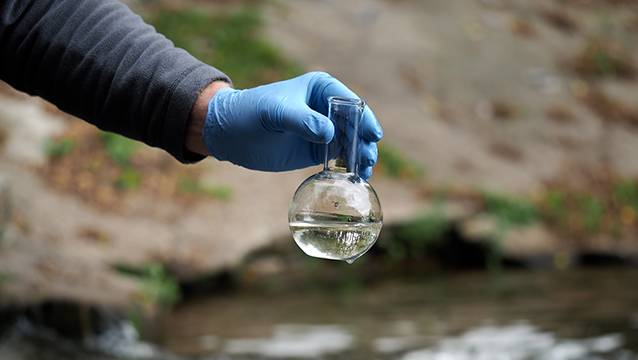

What does this mean?
... well, it means two major things:
In order to analyze water quality, we need data! From the late 1990s until present, the Marion County Public Health Department (MCPHD) has been sampling various locations.
The MCPHD is located in Marion County, IN (https://marionhealth.org/surface-water-program/). A job that they perform is monitoring the condition of local streams and rivers, such as the White River, Eagle Creek, and Fall Creek. They do this by collecting and testing a variety of bacteria, physical, and chemical parameters. These are called pollutants. The results tell them what warning signs to post. If the results come back good, meaning there are a low number of pollutants in the water, for an area, they will post a green sign that says, “safe”. If the results come back good, meaning there are a low number of pollutants in the water, for an area, they will post a green sign that says, “not safe”. If the water is not safe, people should not swim, play, or drink from that water.
In Marion County, there are 54 sites that they monitor five times per month for the following parameters:
In Marion County, there are 54 sites that they monitor quarterly for the following parameters:
So... this might be the point where you are beginning to ask the following questions: Who cares? What is the point? Just keep reading!! We are getting there!
Just like other counties containing major counties containing major cities, Marion County, IN has experienced a huge acceleration of urbanization over the last few decades. An increase in urbanization usually is associated with an increase in harmful pollutants being discharged into surface water bodies, which directly threatens the ecological environment and human health. Data from health departments, such as the one here in Marion County, are typically uploaded and not analyzed, meaning that they must upload data but unless one has experience with water quality data, one will not know how to interpret it. Therefore, it is important and somewhat urgent to evaluate the comprehensive water quality data given in order to understand and identify the main pollution sources and their ecological and human health impacts. It is also important to “translate” the data and create visualizations that assist people outside of the scientific community with understanding water quality data, especially in their local community.
There are a lot of attributes... where do we start?
It is a blessing and a curse that we have so much data and that there is so much being tested!! However, it can make it hard to ultimately determine what is causing water to be not safe for recreation and drinking. The first step that needs to be taken is to reduce the dataset while also keeping most of the information.
This is where a Principal Component Analysis, also known as a PCA, comes into play. This analysis will reduce the parameters in the dataset to only include the major factors that influence the water quality in the waterways in Marion County, IN.
Click this button to continue to the next page!